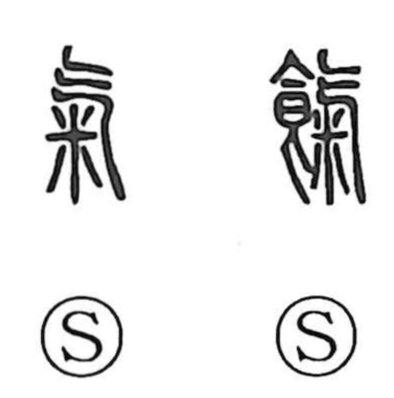

気

Uncategorized
Kun: | On: ki, ke
energy ・ spirit ・ air ・ vital force ・ temperament
Explanation
気 is a picto-phonetic character whose older form is 氣. The element 气 depicts scudding vapors—the moving breath of clouds—and because this vital qi was taken as the source of life, 米, the grains that nourish it, was added, giving the form 気. The same conception appears in 餼, where 氣 with the food radical denotes a gift of provisions. From this root of vital breath, 気 came to name the powers that pervade nature—the great air that surrounds the earth, the vigor that sets activity in motion, and the breath on which we live—and, by extension, the dispositions that show themselves in people and communities.